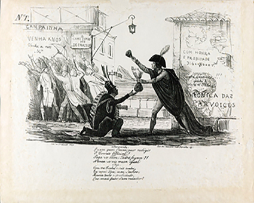

Telefone do século XIX. Crédito: PROCY/SHUTTERSTOCK.COM
Cópia de pintura mural do interior da tumba do artesão egípcio Sennedjem, em Tebas, Egito, c. 1210 a.C. Crédito: MUSEU METROPOLITANO DE ARTE, NOVA YORK, EUA

A campainha e o cujo, de Manuel de Araújo Porto-Alegre, 1837. Essa charge foi uma das primeiras do Brasil a fazer uma sátira do problema da corrupção. Crédito: MANUEL DE ARAÚJO PORTO-ALEGRE/FUNDAÇÃO BIBLIOTECA NACIONAL, RIO DE JANEIRO, RJ
Cena do filme A chegada do trem na estação, de Louis Lumière e Auguste Lumière, 1895. Esse é um dos primeiros filmes da história do cinema. Crédito: MUSEU DE ARTE MODERNA, NOVA YORK, EUA